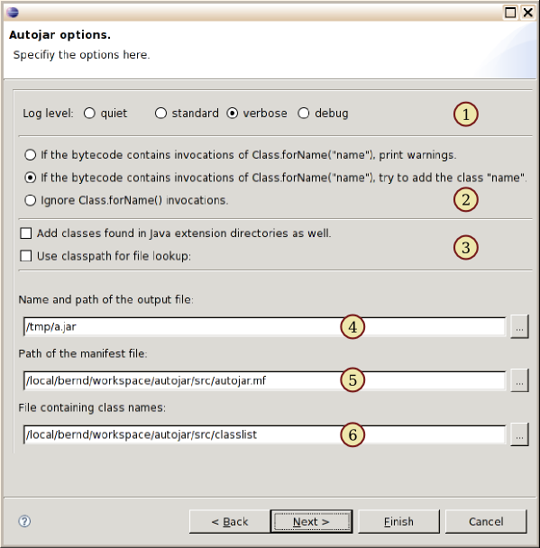

|
Options
In this window some basic options can be set.
(1) At the top the verbosity of the console output is set, according to the options -q, -v, and -D of the command line tool (see Options). (2)The radio boxes define the way Autojar handles dynamic loading. They correspond to the CLI options -d and -a (see Reflection). (3)The first checkbox controls whether or not classes from
extension directories are copied to the output as well (option -e). This
is normally not necessary, provided that the user's JRE extensions are the
same as yours. Without this option you can still explicitly require
certain extension classes to be included.
In the following fields, either a file path can be entered directly, or a file selection dialog can be started by clicking on "...". (4)The path of the output archive. This specification
is mandatory. If it ends with (5)If an own manifest file is specified here, Autojar will merge its content with the MANIFEST file of the generated archive. If it contains a Main-Class entry, this class will automatically copied to the output, as always including directly or indirectly referenced classes. (6)Here a text file containing a list of class names (one per line) may be specified. This is not essential, as class names are normally entered directly, but it allows for preparing a lengthy class list independent of Eclipse. |
Automatic creation of Java archives |
| Bernd Eggink, monoped@users.sourceforge.net | Project page:
|
 German version
German version

|
 Classpath
Classpath